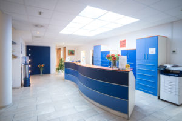

Home
Herzlich Willkommen bei den Zahn-Docs Berlin in der Praxis von ZÄ Katrin Kunath & Kollegen im Berliner Ärztezentrum HelleMitte.
Wir sorgen für Ihr strahlendstes Lächeln!
Auf unserer Homepage erhalten Sie Informationen über unser Team und unsere Leistungen.
Unsere Praxis ist täglich von 7.30 Uhr bis 20.00 Uhr geöffnet, außer Freitags sind wir von 7.30 Uhr bis 12.00 Uhr für Sie da.
Beachten Sie bitte auch die individuellen behandlerbezogenen Sprech- und Urlaubszeiten.